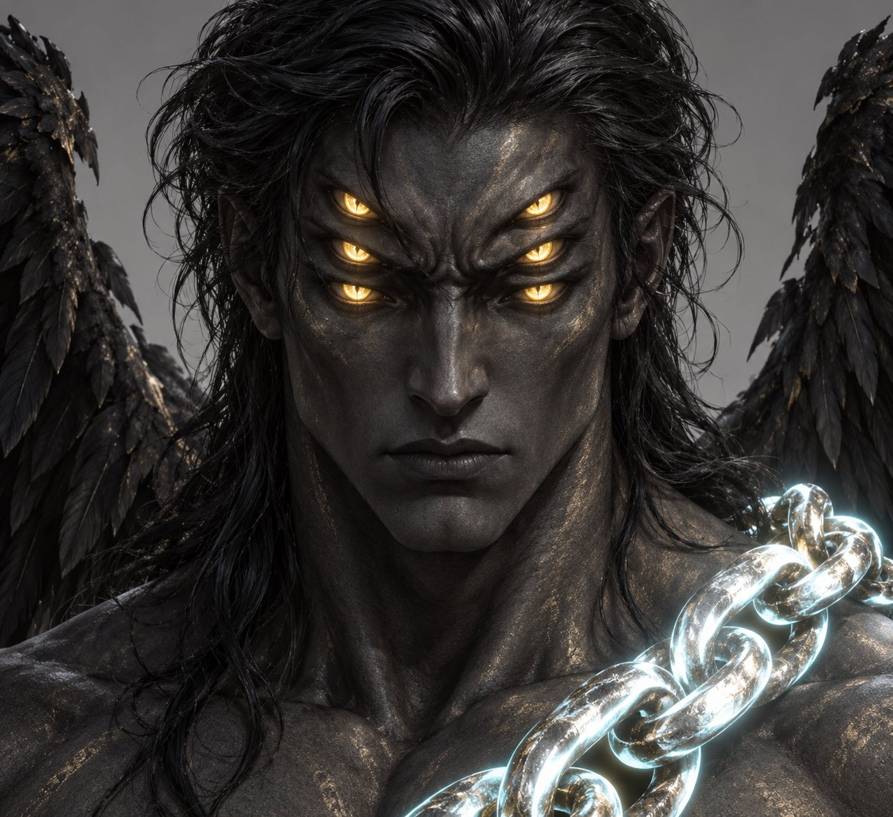
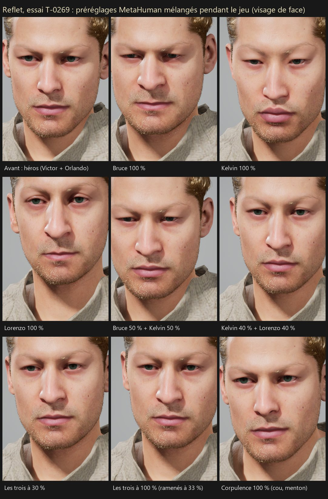
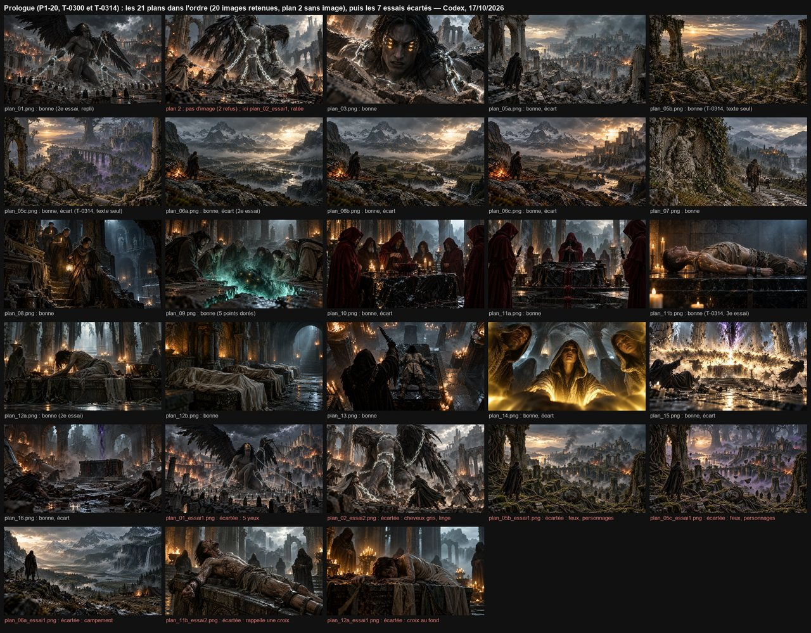

Projet AAA · suivi · samedi 17 octobre 2026 · semaine du 13 au 19 octobre
Jour 5
Le directeur a joué jusqu'à 05:46 en laissant les décisions du jour au Chef (D-320) : la matinée a reporté ses réponses (D-319), préparé les démos 1 et 2 et refait le plan ; depuis 05:46, la carte et le processeur sont rendus et les deux files repartent.
Mise à jour : 17/10/2026 à 09:56
Résumé
7 à faire2 en cours2 en vérification58 validés
D-319 : prologue (« Et puis toi. », Ange solide et assombri, réveil en FPS), entité de la démo 1 (« Lâche tout. Laisse-moi faire. », variantes de « Pas encore. », sous-titres d'au moins 1,5 s), hameau (voix des redites en direct, morts au hasard selon l'âge et la saison, marchand des Canyons, Choix A vouvoyé), villageois (tombe debout, retour de chasse, lanterne la nuit), laie au pas du mâle.
D-320 : carte et processeur repris par le directeur pour jouer ; le Chef décide seul aujourd'hui et enchaîne les tickets en autonomie.
Plan recalculé (T-0276, validé) : démo 1 vers le 07/11/2026, démo 2 vers le 27/12/2026, version finale vers le 13/02/2027 (débit probable de 50 h par semaine ; chaque jour sans la carte recule tout d'un jour).
Les files de travail
Les deux files de travail (D-317), en pause pour la carte et le gros du processeur tant que le directeur joue (D-320 (2)) ; l'écriture continue.
File carte graphique (Unreal)
Carte rendue à 05:46 (D-320 (20)) : un seul agent à la fois dans le projet, dans l'ordre de l'état de la démo 1.
T-0237 · D-318 (1) · D-320 (4)
La semelle se pose sur la prise
Livré le 16/10 à 12:53 : escalade VERTE aux 4 débits, 0 pied et 0 main dans la roche ; avant de la semelle sur le bord du dessus.
Validé
Validé à 04:16 sur pièces (critères revus, D-320 (4)) ; la suite est T-0254.
T-0269 · P1-08 · D-320 (12)
Essai du reflet pendant le jeu
Mélanger des préréglages MetaHuman avec des curseurs, en jeu : faisable ou non.
Validé
Validé à 08:03 : faisable, chiffres conformes. Choix du Chef (D-320 (31)) : la fiche du reflet (P1-08) suit cette voie ; le cache de peau sera mesuré sur tout le jeu avant d'être activé.
T-0254 · D-320 (4), (5)
Escalade : pied pendant le fondu, vue rasante, parcours
Le dernier pied dans la roche (pendant le fondu de la prise), une vue rasante de la semelle, un parcours VERT carte libre.
Validé
Validé à 07:10 : aucun pied ni main dans la roche aux 4 débits ; parcours à refaire carte libre (arc de la patrouille à revérifier).
T-0255 · D-319 (5), (8), (9)
Répliques de l'entité dans le jeu
« Lâche tout. Laisse-moi faire. », trois variantes de « Pas encore. », sous-titres d'au moins 1,5 s.
Validé
Validé à 09:13 : textes identiques à ceux de l'entité, sous-titres de 1,5 à 2,0 s, alternance dans l'ordre. Le Chef a rangé sur E: un fichier de règles laissé sur C: et rectifié une phrase du rapport.
T-0199 · D-301 (4)
Yeux de jour des morts-vivants
Un lavande un peu plus soutenu de jour.
Validé
Validé à 09:13 : remesuré, de jour 244° → 261°, saturation 0,25 → 0,42 de près ; nuit identique ; possédé blanc pur.
T-0189 · D-236 (4)
La meute de 6 loups pendant la Tempête de Neige
Elle rôde près du hameau pendant la tempête.
À faire
Attend la carte.
T-0191 · D-283 (2)
Les pieds des créatures sur les pentes
Une IK des pieds propre aux créatures.
À faire
Attend la carte.
T-0264 · P1-16 · D-320 (11)
Voix de l'entité de la démo 1
Une voix grave du domaine public, 38 prises traitées en binaural et tatouées, une page d'écoute pour vous.
À faire
Attend la carte et T-0262.
T-0294 · P1-04 · D-68 · D-320 (26)
Vue à la première personne, accroupi, marche furtive
R3 ou V pour passer en vue FPS (bras et épée) ; Ctrl ou la croix pour s'accroupir ; animations CC0 déjà dans le projet.
À faire
Ticket écrit à 07:44, après T-0255, T-0199 et T-0264.
T-0298 · P1-10 · D-320 (29)
La jauge de Mana
Cachée avant l'éveil, pleine à l'éveil ; chaque coup d'épée qui touche la recharge ; le grand sort guidé est gratuit.
À faire
Ticket écrit à 07:50, après T-0294.
T-0303 · P2-17 · D-320 (16), (36)
Essai de la voix du nom
Une réplique qui dit le nom saisi, générée pendant le jeu ; temps, mémoire, images/s, qualité.
À faire
Écrit à 08:16 ; juste après T-0264 (même chaîne de voix).
T-0304 · P2-24 · D-320 (16)
Des enfants en MetaHuman ?
Court essai dans l'éditeur : un garçon et une fille à côté d'un adulte, et un verdict.
À faire
Écrit à 08:16 ; court essai seul, entre deux tickets.
T-0308 · D-304 · D-320 (32) (9)
La vidéo courte de la démo 1
Le parcours montrable aujourd'hui (combat, horde et Ange, falaise, panorama, forgeron), sans prologue, ni reflet, ni réveil, avec le son.
En cours
Lancé à 09:03 sur la carte rendue par T-0255 et T-0199.
Après T-0255 et T-0199 : T-0308 (vidéo courte de la démo 1), T-0264 (voix de l'entité), T-0303 (voix du nom), T-0304 (enfants), T-0294 (vue FPS, accroupi), T-0298 (Mana), puis la suite du § 3.2 de l'état de la démo 1.
File processeur (écriture, Blender)
Processeur rendu à 05:46 : Blender (escalade, pli du sanglier) et écriture en parallèle.
T-0248 · D-319 (1) à (10)
Report de D-319 : prologue et entité
« Et puis toi. », l'Ange à Gath, le réveil, HOR-10, HOR-15, REV-11, sous-titres, seuils.
Validé
Validé à 04:21 (vérification et relecture du lore sans blocage) : 37 répliques de l'entité (179,5 s).
T-0249 · D-319 (11) à (21)
Report de D-319 : règle du hameau
Morts au hasard, métier de B2, agente, récompenses, marchand des Canyons, Topographie.
Validé
Validé à 04:25 (après une correction, avec les choix de D-320 (8)) : tensions 13 et 14 closes, Topographie § 5 alignée.
T-0250 · D-319 (20)
Choix A au pont, vouvoyé
Trois répliques vouvoyées pour un hameau encore méfiant ; deux conditions élargies.
Validé
Validé à 04:18 : 158 répliques au hameau (685,5 s).
T-0251 · D-319 (22), (23)
Faune et plan : laie, villageois
Laies faites, toile et saut faits, pli du boulet, tâches des villageois.
Validé
Validé à 04:18.
T-0256 · D-320 (3)
Page « Modèles 3D » : laie, boiteries, villageois
La laie en 3D, les boiteries du cheval, du sanglier et du loup, les villageois en vidéo (licence MetaHuman).
Validé
Validé à 04:42 : laie en 3D, villageois en vidéo, cheval, sanglier et loup à jour ; aucun fichier MetaHuman en ligne.
T-0252 · D-319 (22)
Villageois : tombe debout, chasse, lanterne
Trois tâches de plus dans Blender.
Validé
Validé à 07:04 : tombe creusée debout, retour de chasse, lanterne la nuit ; mesures sous les seuils.
T-0253 · D-319 (23)
Le pli du boulet du grand mâle
Le remède de la laie, côté gauche.
Validé
Validé à 06:22 (mesure refaite par le vérificateur) : pli gauche à 0 dans les 12 allures ; le reste inchangé.
T-0257 · D-320 (7)
Le Choix A compte comme une quête réussie
Conditions des répliques du pont, redites du doyen, Topographie § 5 et POI B, Guide des Métiers, plan : marchand des Canyons, plus d'autre agent du Cartel.
Validé
Validé à 04:29 : le doyen redit 28 répliques ; Topographie, Guide, Faune, plan alignés.
T-0258 · D-318 · D-319 (14), (16) · D-320 (8)
Simulation du hameau : morts au hasard, métiers
Les morts au hasard (agente exclue, enfants de maladie seulement) avec des chiffres mesurés ; l'expérience des métiers selon l'action faite.
Validé
Validé à 05:14 : chiffres relancés à l'identique (4,82 morts par an, 10,8 % d'enfants) ; page en ligne.
T-0259 · D-304 · D-320 (6)
État de la démo 1
Pour chaque ticket du jalon 1 : fait, partiel ou à faire ; le chemin le plus court vers une démo 1 montrable.
Validé
Validé à 04:34 : 6 entrées faites, 15 partielles, 3 à faire ; l'ordre des prochains tickets respecte les dépendances.
T-0260 · D-319 (2), (5)
Invites de l'Ange ; variantes de « Pas encore. » dans les documents
« no halo » et un corps solide dans les invites des images du prologue ; les trois variantes dans le GDD et le Design du Didacticiel.
Validé
Validé à 04:25 (après une retouche).
T-0261 · D-209 (2) · D-319
Sous-titres anglais relus
Les 37 répliques de l'entité et le prologue, en anglais naturel, pour les investisseurs.
Validé
Validé à 04:36 : 28 gardés, 9 retouchés.
T-0262 · P1-16 · D-178
Feuille de génération des voix de l'entité
Une ligne par prise : texte, fichier, durée, jeu, traitement binaural ; prête pour le retour de la carte.
Validé
Validé à 04:39 : 37 prises prêtes, ≈ 30 à 40 min de carte.
T-0263 · D-320 (9)
Restes de T-0257
Le chef remet le cheval ; « tant que la méfiance n'est pas à 0 » ; P2-21 à 4 PNJ ; D-184 marqué.
Validé
Validé à 04:37 (après une retouche) : le chef remet le cheval ; P2-21 à 4 PNJ (6,8 h), P2-27 à 7,7 h.
T-0265 · D-320 (10)
Anglais : MON-03, sous-titres longs en deux cartons
« getting stronger », la règle des deux cartons et les coupes des répliques longues.
Validé
Validé à 04:46 (après une correction) : 8 sous-titres longs coupés en deux cartons.
T-0266 · P1-21 · D-320 (12)
Plan sonore de la démo 1
Pour chaque moment du parcours : le son, son volume, sa place ; ce qui manque.
Validé
Validé à 04:50 : 126 fichiers cités, tous présents ; 17 manques avec options (tranchés au moment de P1-21).
T-0267 · D-319 (2)
Seconde fiche de l'Ange à Gath
L'Ange au Scellement, solide et assombri : description et invites des images du prologue.
Validé
Validé à 04:50 (après une correction, vérification et relecture du lore) : fiche « ange-gath » prête pour les images.
T-0268 · P1-06 · D-320 (12)
Animations d'escalade dans Blender
Faites par le code, comme les villageois et la monte ; repli : escalade simplifiée.
Validé
Validé à 07:13 : 6 animations d'escalade du héros, faites par le code dans Blender ; la sortie en haut de la falaise reste à reprendre (repli : la sortie actuelle).
T-0270 · D-320 (11), (12)
Feuille des voix et état de la démo 1 : choix reportés
Les choix du Chef marqués dans les deux fichiers.
Validé
Validé à 04:47.
T-0271 · D-320 (12)
Ordre de la démo 1 remis à jour
Le montrable d'abord, l'essai du reflet tôt, l'escalade dans Blender, les nouveaux tickets placés.
Validé
Validé à 04:53 : 22 rangs, toutes les dépendances respectées.
T-0272 · D-319 (2) · D-320 (14)
Invites du prologue d'après la fiche de l'Ange
Plans 1 à 3 : corps gris charbon, chaînes argentées à liseré cyan, sans auréole.
Validé
Validé à 04:54 : invites des plans 1 à 3 prêtes pour les images.
T-0273 · T-0271 · T-0272
Petits alignements de l'état de la démo 1 et du prologue
États des tickets à jour ; fiche de l'Ange faite.
Validé
Validé à 04:57.
T-0274 · D-304 · D-320 (6)
Présentation pour les investisseurs, à jour au 17/10
Les diapositives d'avancement refaites avec l'état réel du prototype, la démo 1 et ses risques.
Validé
Validé à 05:12 (après deux retouches) : démo 1 visée début novembre (plan du 15/10, non recalculé).
T-0275 · D-304 · D-320 (6)
État de la démo 2
Pour chaque ticket des jalons 2 et 3 : fait, partiel ou à faire ; l'ordre après la démo 1.
Validé
Validé à 05:15 : 49 entrées, 1 faite, 19 partielles, 29 à faire (≈ 262 h) ; l'ordre après la démo 1 est prêt.
T-0276 · P0-01 · D-320 (6)
Recalcul du plan de production
Un script refait le calendrier (Unreal seul) avec ce qui est fait et l'ordre du jour : vraies dates des démos 1 et 2.
Validé
Validé à 05:48 : démo 1 vers le 07/11/2026, démo 2 vers le 27/12/2026, version finale vers le 13/02/2027.
T-0277 · P2-13 · D-320 (16)
Répliques de l'aubergiste et de l'agente du Cartel
Ce que les dialogues existants n'ont pas encore : accueil, repos, rumeurs, marché noir.
Validé
Validé à 05:49 (après deux corrections et la relecture du lore) : 50 répliques, 270,5 s.
T-0278 · P2-21 · D-318 (8)
Fiches des 4 successeurs
Dont le successeur prévu du chef ; sans nom, voix distincte.
Validé
Validé à 05:41 (après une correction et la relecture du lore) : la doyenne, l'apprenti, le fils de l'éleveur, la servante.
T-0279 · D-320 (15), (17)
La doyenne et le fils de l'éleveur dans les dialogues
« La doyenne » accordée partout, REC-09, redites de la servante, petits restes de la règle.
Validé
Validé à 06:01.
T-0280 · D-320 (18)
Objets et prix : troc chez l'aubergiste
Le troc chez l'aubergiste, l'offre de l'agente après le nid.
Validé
Validé à 05:48 : troc chez l'aubergiste, frelatée après le nid, auberge fermée tant que le hameau est hostile.
T-0281 · D-320 (17)
Restes de la doyenne
REC-07 et quelques lignes des fiches.
Validé
Validé à 06:04.
T-0282 · P3-13 · D-320 (16)
Répliques du pont
Les déserteurs, l'agente au Choix B, l'entité (le choix, le premier souvenir).
Validé
Validé à 06:36 (après une correction et la relecture du lore) : 36 répliques, 156,5 s.
T-0283 · D-183 (2) · D-320 (21)
L'insigne du chef des déserteurs ; le ravin
L'insigne caché sous le tabard dans la fiche et la bible ; le pont sur le ravin dans la Topographie.
Validé
Validé à 06:32 (après une correction : « rivière ou ravin » reste pour le jeu complet, le ravin pour le prototype).
T-0284 · D-320 (3)
Pages du site à jour
Présentation, plan, dialogues, fiches, objets et prix, sons : refaites depuis les sources du jour.
Validé
Validé à 07:17 : 6 pages en ligne, 0 lien cassé sur 460, rien de personnel ; les dates de la présentation suivent T-0287.
T-0285 · P2-25 · D-320 (17)
Villageois : forger, courir à l'abri
Les deux dernières tâches des villageois.
Validé
Validé à 07:45 : pieds à 0,4 cm du sol au plus, le marteau touche la pièce aux 3 coups sans y entrer ; les vidéos iront sur la page « Modèles 3D ».
T-0286 · D-320 (22)
Sons manquants de la démo 1
Ambiance du hameau, forge, signal de montée de niveau, déflagration, meneur, souffle : montés depuis la bibliothèque.
Validé
Validé à 07:21 : 10 sons, crêtes de −1,4 à −4,4 dBFS, licences relues ; la ligne du battement sera protégée par T-0289.
T-0287 · T-0276
Présentation : dates du plan recalculé
Démo 1 le 07/11, démo 2 le 27/12, version finale le 13/02/2027 dans la présentation.
Validé
Validé à 07:20 : démo 1 le 07/11, démo 2 le 27/12, version finale le 13/02/2027 dans la présentation.
T-0288 · P1-06
Escalade : la sortie en haut de la falaise
Refaire la sortie sans cuisse dans le buste ni main qui glisse, dans Blender.
Validé
Validé à 08:20 après la correction de la note d'import (cotes de la prise de pied confirmées dans Blender).
T-0289 · T-0247 · T-0286
Licences des sons protégées
Le script des licences ne peut plus effacer les lignes ajoutées à la main.
Validé
Validé à 07:33 : la ligne du battement est gardée, toute retouche est refusée.
T-0290 · T-0276 · T-0287
Présentation : heures du plan recalculé
925 h pour le plan entier, dont 849 h restent.
Validé
Validé à 07:26 : 925 h, dont 849 h restent ; 147 h pour finir le jalon 1.
T-0291 · T-0287 · T-0290
Page « Présentation » à jour
Les dates et les heures du plan recalculé sur le site.
Validé
Validé à 07:41 : la page en ligne est identique au clone, frise et fourchettes justes. Choix du Chef : la barre du jalon 1 reste de S0 à S5,4 (D-320 (25)).
T-0292 · D-320 (24) · D-160
Images de l'Ange à Gath
3 images avec Codex (quota ChatGPT Plus du directeur), pour valider l'aspect avant les 21 images du prologue.
Validé
Validé à 07:51 : invites mot pour mot, verdicts exacts. Choix du Chef (D-320 (30)) : aspect de l'image principale et du portrait retenu, cheveux longs et noirs.
T-0293 · D-320 (25)
Petit alignement : présentation et plan sonore
Retirer « page de relecture pas refaite » de la présentation ; mettre à jour la liste des sons déjà là.
Validé
Validé à 07:53 : seuls les passages prévus changent ; les deux pages de la présentation ont le même contenu.
T-0295 · P1-22 · D-304
Découpage de la vidéo de la démo 1
Ce que montre la vidéo de 3 à 5 min, plan par plan, et ce qui est prêt ou manque.
Validé
Validé à 08:50 après deux corrections : 4 min 24,5 s en 30 plans ; carton de fin et mentions de l'IA justes ; tous les textes de l'entité mot pour mot.
T-0296 · D-320 (3)
Page « Modèles 3D » : escalade, villageois, sanglier
L'escalade du héros en vidéo, les nouvelles tâches des villageois, le pli corrigé du sanglier.
Validé
Validé à 08:41 : aucun fichier MetaHuman en ligne, la vidéo coupée finit sur le lâcher, site identique au clone.
T-0297 · D-320 (25), (28)
Page « Présentation » : point « Images »
Remettre en ligne la phrase corrigée par T-0293.
Validé
Validé à 07:58 : seuls le surtitre et le point « Images » changent ; page en ligne identique au clone.
T-0299 · D-320 (30)
L'Ange à Gath : cheveux longs et noirs
Dans la fiche de l'Ange et dans les invites du prologue.
Validé
Validé à 07:58 : « long black hair » au même endroit partout ; rien d'autre n'a changé.
T-0300 · P1-20 · D-160 · D-320 (30)
Les 21 images du prologue
Avec Codex (quota ChatGPT Plus du directeur), une génération par appel, chaque image regardée et jugée.
En vérification
Fini à 09:48 : 21 images en 27 générations, 17 bonnes et 4 ratées (plans 2, 5b, 5c, 11b). Choix du Chef (D-320 (49)) : invites corrigées puis seconde génération des 4. Vérification lancée.
T-0301 · D-320 (6)
État de la démo 2 à jour
Porter dans l'état de la démo 2 les tickets validés aujourd'hui (hameau, pont, successeurs, villageois, bêtes, plan recalculé).
Validé
Validé à 08:35 après correction : la file carte de la démo 2 suit « le montrable d'abord » sans casser de dépendance. Choix du Chef (D-320 (39)) : route courte d'≈ 1 km, cheval monté au Choix A.
T-0302 · P2-15 · D-320 (35)
Plan sonore de la démo 2
Sons du hameau, du nid, du pont et de la route, moment par moment, sur le modèle de la démo 1.
Validé
Validé à 09:06 après deux corrections : plan sonore de la démo 2, choix du Chef reportés (D-320 (40), (44)).
T-0305 · D-320 (35)
Petits alignements de la démo 2
Le plan (ordre de la démo 2, fichiers du hameau), la fiche de l'aubergiste, CAR-20.
Validé
Validé à 08:50 après la correction faite par l'agent de T-0306 (condition de CAR-20).
T-0306 · P2-13 · D-320 (18), (37)
Le troc de l'aubergiste
Ses répliques de troc à valeur égale, selon l'humeur du hameau, et les derniers passages périmés.
Validé
Validé à 09:14 après deux corrections : 15 répliques de troc à valeur égale ; à sec, plus de pièces mais le troc reste ouvert ; la servante le reprend.
T-0307 · D-320 (39)
État de la démo 1 à jour
Porter les tickets du jour dans l'état de la démo 1 et ranger les nouveaux tickets de la file carte ; la route vers Oakhaven tranchée dans le plan de niveau.
Validé
Validé à 09:03 : l'état de la démo 1 suit les tickets du jour ; file carte rangée (vidéo courte avant la voix de l'entité).
T-0309 · P3-16 · D-320 (35)
Découpage de la vidéo de la démo 2
Ce que montre la vidéo de la démo 2, plan par plan, sur le modèle de la démo 1.
En cours
Correction 2 lancée à 09:56 : un compte, et l'anglais de T-0311 reporté dans le découpage.
T-0310 · D-320 (45)
Petits alignements du jour
Les répliques de l'entité, le plan sonore de la démo 2 et l'état de la démo 1 suivent les derniers tickets.
Validé
Validé à 09:18 : les trois alignements suivent T-0255, T-0302 et T-0308.
T-0311 · D-320 (32) (2), (48)
Sous-titres anglais de la démo 2
L'anglais britannique des 48 répliques de PNJ montrées dans la vidéo de la démo 2.
Validé
Validé à 09:56 après correction : les 48 répliques de la vidéo de la démo 2 ont leur anglais britannique.
T-0312 · P1-20 · D-320 (49)
Invites corrigées du prologue
Les invites des 4 images ratées (plans 2, 5b, 5c, 11b), avant leur seconde génération.
En vérification
Livré à 09:54 : invites des plans 2, 5b, 5c et 11b réécrites. Choix du Chef : veines du 11b en or. Vérification et relecture du lore lancées.
Après T-0288 : la page « Modèles 3D » (villageois, sanglier, escalade du héros, en images et vidéos), puis de nouveaux tickets d'écriture pour la démo 1.
Modèles 3D du jour
Les modèles et animations validés hier, à voir aussi dans la page « Modèles 3D » : la laie en 3D, les boiteries du cheval, du sanglier et du loup avec leurs vidéos, les villageois en vidéo et en images (la licence MetaHuman interdit de publier leurs fichiers 3D).
Tirée du sanglier : même squelette (46 os), mêmes 20 animations mises à l'échelle 0,8175, sans grandes défenses. En compagnie, elle va au pas du mâle (D-319 (23)). Le pli du boulet gauche est repris ; il le sera aussi chez le mâle (T-0253).
Au pas, la hanche du côté blessé monte de 6,5 cm (2,1 avant).
Au pas, la boiterie d'un postérieur se voit de profil et de derrière : la hanche du côté blessé monte de 6,5 cm, l'appui passe de 36 à 31 % du pas, la tête descend d'environ 3 cm. Le trot n'a pas changé.
Couper du bois, porter un fagot, ronde, troupeau, houe, retour blessé, alité.
Sept tâches sur le squelette des MetaHumans, contacts de peau de 0,43 cm au plus. À venir : la tombe debout, le retour de chasse, la lanterne la nuit (T-0252). Images et vidéo seulement : la licence interdit de publier les fichiers MetaHuman hors d'Unreal.
Corps solide gris charbon, trois paires d'yeux dorés, une aile cassée, chaînes argentées à liseré cyan.
Image de concept faite avec Codex à partir de la fiche « ange-gath » : l'Ange juste après sa chute, encore solide, avant les images du prologue. Les cheveux seront longs et noirs dans les images suivantes (D-320 (30)).
Sur le PC : E:\aaa-proto\personnages\ange-gath\
L'Ange à Gath, portrait
Validé
T-0292 · D-320 (24), (30)

Trois paires d'yeux dorés, cheveux noirs, chaîne en travers de l'épaule.
Le portrait sert à contrôler le nombre d'yeux (trois paires) ; il donne aussi la couleur des cheveux retenue.
Sur le PC : E:\aaa-proto\personnages\ange-gath\
Reflet : visages mélangés pendant le jeu
Validé
T-0269 · P1-08 · D-320 (12)

Le héros, puis trois préréglages MetaHuman seuls et mélangés, et la corpulence.
Essai de faisabilité du reflet : les visages sont calculés à l'avance dans l'éditeur, puis mélangés en jeu par des curseurs, dès l'image suivante. Les yeux et la mâchoire ne suivent pas encore tout à fait (fiche P1-08). Images seulement : la licence interdit de publier les fichiers MetaHuman.
Sur le PC : E:\aaa-proto\unreal-v2\mesures\t0269\
Héros : sortie en haut de la falaise
Validé
T-0288 · P1-06 · D-320 (12), (33)
Animation faite par le code dans Blender : plus de cuisse dans le buste, main sur l'arête à 0,43 cm au plus, bottes à 1,23 cm. Vidéo seulement : la licence interdit de publier les fichiers MetaHuman.
Pied sur une prise 40 cm sous l'arête, redressement, passage de l'autre pied · 0:10 · 1200 × 520 · 642 ko
Six animations d'escalade faites par le code dans Blender, sur le squelette des MetaHumans, avec le mur invisible des mains (0,3 cm) et des pieds (1,0 cm).
Prise, montée, repos, bond, fatigue, lâcher (la sortie est dans la vidéo suivante) · 0:24 · 1200 × 520 · 1,3 Mo
Avant et après, de près et à 15 m, de jour puis de nuit.
De jour, un lavande plus soutenu, pour ne pas confondre les morts-vivants avec les yeux blanc laiteux des possédés ; la nuit ne change pas.
Sur le PC : E:\aaa-proto\unreal-v2\mesures\t0199\
Prologue : les 21 images
En vérification
T-0300 · P1-20 · D-160 · D-320 (30), (49)

Les 21 images dans l'ordre des plans, puis les essais écartés ; les ratées sont marquées en rouge.
Images faites avec Codex à partir des invites du prologue : 17 bonnes ; les plans 2, 5b, 5c et 11b seront refaits avec des invites corrigées. Elles seront animées (zooms, parallaxe) dans le montage du prologue.
Sur le PC : E:\aaa-proto\prologue\images\
Journal
Réponses du questionnaire reçues (D-319) ; le directeur reprend la carte et le processeur pour jouer et laisse les décisions du jour au Chef (D-320).
T-0248 à T-0251 (reports de D-319) lancés, écriture seulement.
T-0237 (semelle sur la prise) : critères revus (D-320 (4)), vérification sur pièces lancée.
« D'autres tickets une fois finis, en autonomie » (D-320 (6)) : T-0252 à T-0256 créés.
T-0250 et T-0251 livrés, en vérification ; T-0256 (page Modèles 3D) lancé en priorité basse.
T-0237 validé. Choix du Chef : le Choix A compte comme une quête réussie (D-320 (7)) ; T-0257 créé.
T-0249 livré, en vérification. Choix du Chef (D-320 (8)) : le gibier rapporté pour B1 donne de la Chasse & Traque ; l'agente est hors des morts au hasard. T-0258 créé.
T-0250 et T-0251 validés.
T-0259 (état de la démo 1) lancé.
T-0248 (report de D-319 : prologue et entité) livré, en vérification et relecture du lore.
T-0249 renvoyé pour deux retouches (correction lancée) ; T-0257 lancé.
T-0248 validé ; T-0260 (petits restes du lore) lancé.
T-0260 livré, en vérification.
T-0249 validé ; T-0260 retouché, en vérification.
T-0260 validé.
T-0261 (sous-titres anglais) et T-0262 (feuille des voix de l'entité) lancés.
T-0259 (état de la démo 1) livré, en vérification.
T-0257 livré, en vérification ; choix du Chef sur ses restes (D-320 (9)) ; T-0263 créé.
T-0257 validé ; T-0263 lancé ; T-0259 renvoyé pour l'ordre de deux tickets.
T-0261 (anglais), T-0263 et la correction de T-0259 livrés, en vérification. Choix du Chef sur l'anglais (D-320 (10)) : britannique, « getting stronger », deux cartons pour les longs sous-titres.
T-0259 (état de la démo 1) validé.
T-0262 livré, en vérification. Choix du Chef sur les voix (D-320 (11)) ; T-0264 (voix, file carte) créé.
T-0256 livré : la laie et les villageois sont dans la page « Modèles 3D » ; vérification lancée.
T-0261 validé ; T-0265 lancé ; T-0263 renvoyé pour une mention oubliée.
T-0263 validé.
T-0263 validé. Choix du Chef sur la démo 1 (D-320 (12)) : le montrable d'abord avec un essai précoce du reflet ; escalade par le code dans Blender ; forgeron dans P1-22. T-0266, T-0267 lancés ; T-0268, T-0269 créés.
T-0262 (feuille des voix) validé ; T-0270 créé.
T-0265 renvoyé (MON-02), correction lancée ; T-0270 lancé. Choix du Chef (D-320 (13)) : chaque carton de sous-titre au moins 1,5 s.
T-0256 (page Modèles 3D) validé ; T-0267 (fiche de l'Ange à Gath) livré, en vérification ; T-0258 (simulation du hameau) lancé.
T-0265 corrigé, en vérification.
T-0270 livré, en vérification ; T-0267 renvoyé pour quatre retouches de l'invite ; choix du Chef sur l'Ange à Gath (D-320 (14)).
T-0265 validé ; T-0266 (plan sonore de la démo 1) livré, en vérification.
T-0270 validé ; T-0271 (ordre de la démo 1) lancé.
T-0266 (plan sonore) et T-0267 (fiche de l'Ange à Gath) validés ; T-0272 (invites du prologue) lancé.
T-0271 (ordre de la démo 1) validé ; T-0272 livré, en vérification ; T-0273 créé.
T-0272 validé ; T-0273 lancé.
T-0274 (présentation pour les investisseurs) lancé.
T-0273 validé.
T-0275 (état de la démo 2) lancé.
T-0274 (présentation pour les investisseurs) livré, en vérification ; ses choix d'équipe et de présentation restent pour vous.
T-0275 (état de la démo 2) livré, en vérification.
T-0274 renvoyé pour deux retouches (correction lancée).
T-0258 (simulation du hameau) livré et en ligne, en vérification ; les bébés comptent comme des enfants (choix du Chef).
T-0274 (présentation pour les investisseurs) validé.
T-0276 (recalcul du plan de production) lancé.
T-0275 renvoyé pour trois erreurs d'état (correction lancée).
T-0258 (simulation du hameau) validé ; T-0275 corrigé, en vérification.
T-0275 (état de la démo 2) validé.
Choix du Chef sur la démo 2 (D-320 (16)) : le montrable d'abord, les essais de faisabilité tôt (voix du nom, enfants MetaHuman). T-0277 et T-0278 lancés.
T-0278 (fiches des successeurs) livré, en vérification et relecture du lore.
T-0277 (aubergiste et agente) livré, en vérification et relecture du lore.
T-0276 (recalcul du plan) livré : démo 1 vers le 07/11, démo 2 vers le 27/12, version finale vers le 13/02/2027 ; en vérification.
Choix du Chef sur les successeurs (D-320 (17)) : la doyenne (68 ans), l'apprenti, le fils de l'éleveur, la servante ; T-0278 en correction.
Choix du Chef sur l'aubergiste et l'agente (D-320 (18)) : offre après le nid, jamais « Capitaine », l'agente et le marchand restent deux personnes ; T-0277 en correction.
T-0276 renvoyé pour deux phrases (aucun chiffre ne change).
T-0278 (fiches des successeurs) validé ; T-0279 préparé.
T-0277 corrigé, en vérification ; T-0280 lancé.
T-0280 livré ; choix du Chef (D-320 (19)) : nuit refusée le soir même après une mort vue, auberge fermée tant que le hameau est hostile. T-0277 en correction 2.
Le directeur rend la carte et le processeur (D-320 (20)) : T-0254 (escalade, file carte), T-0268 (escalade dans Blender) et T-0253 (pli du sanglier) lancés.
T-0276 corrigé, en vérification.
T-0280 (objets et prix) validé.
T-0277 corrigé, en vérification.
T-0276 (recalcul du plan) validé.
T-0277 (aubergiste et agente) validé ; T-0279 (la doyenne) lancé.
T-0279 (la doyenne) livré, en vérification.
T-0279 validé ; T-0281 (restes de la doyenne) lancé.
T-0281 livré, en vérification ; T-0282 (répliques du pont) lancé.
T-0281 validé.
T-0253 (pli du sanglier) livré, en vérification ; T-0252 (villageois : tombe, chasse, lanterne) lancé.
T-0282 (répliques du pont) livré, en vérification et relecture du lore.
T-0253 (pli du boulet du sanglier) validé.
Choix du Chef sur le pont (D-320 (21)) : le chef des déserteurs dit « Capitaine », voit l'insigne sans rien dire ; frelatée dans la marmite ; T-0282 en correction, T-0283 lancé.
T-0283 validé.
T-0282 corrigé, en vérification ; T-0284 (pages du site à jour) lancé.
T-0282 (répliques du pont) validé.
T-0252 (villageois : tombe, chasse, lanterne) livré, en vérification.
Choix du Chef sur les sons manquants (D-320 (22)) ; T-0286 lancé, T-0285 créé.
T-0252 validé ; T-0285 (forger, courir à l'abri) lancé.
T-0254 (escalade, carte) et T-0268 (escalade dans Blender) livrés, en vérification ; règle du Chef sur Ollama (D-320 (23)) ; T-0269 (essai du reflet) lancé.
T-0254 (escalade, carte) validé.
T-0284 (pages du site) livré, en vérification ; T-0268 corrigé, en vérification.
T-0287 (dates de la présentation) lancé.
T-0268 (escalade dans Blender) validé.
T-0268 validé ; T-0288 (sortie en haut de la falaise, Blender) lancé.
T-0284 (pages du site) validé.
T-0287 (dates de la présentation) livré, en vérification.
T-0286 (sons manquants de la démo 1) livré, en vérification ; T-0289 lancé.
T-0287 validé ; T-0290 (heures de la présentation) lancé.
T-0286 (sons manquants de la démo 1) validé.
T-0289 reciblé : le script qui écrit les licences est celui du catalogue.
T-0290 (heures de la présentation) validé ; T-0291 (page de la présentation) lancé.
T-0289 livré, en vérification.
T-0285 (forger, courir à l'abri) livré, en vérification.
T-0289 validé. Choix du Chef (D-320 (24)) : 3 images de l'Ange à Gath avec Codex ; T-0292 lancé.
T-0291 validé : la page « Présentation » du site montre les dates et les heures du plan recalculé.
Choix du Chef (D-320 (25)) : la barre du jalon 1 reste de S0 à S5,4 ; T-0293 (petit alignement) lancé.
T-0292 livré : 3 images de l'Ange à Gath ; deux suivent la fiche, la variante à genoux n'a que 2 paires d'yeux. Vérification lancée.
T-0285 validé : les villageois forgent et courent à l'abri.
Choix du Chef (D-320 (26), (27)) : vue FPS par R3 ou V, accroupi en bascule ; ticket T-0294 écrit pour la file carte.
T-0288 livré : la sortie en haut de la falaise passe tous les seuils. Vérification lancée.
T-0293 livré, en vérification ; T-0295 (découpage de la vidéo de la démo 1) lancé ; T-0296 (page « Modèles 3D ») écrit.
Choix du Chef (D-320 (28)) : la phrase « Images » de la présentation sera remise en ligne par T-0297.
Choix du Chef (D-320 (29)) : la jauge de Mana (T-0298) et les 5 questions laissées par T-0118.
T-0292 validé : images de l'Ange à Gath. Choix du Chef (D-320 (30)) : cheveux longs et noirs ; T-0299 lancé, puis les 21 images du prologue (T-0300).
T-0293 validé ; T-0297 (point « Images » de la page « Présentation ») lancé.
T-0269 livré : le mélange de visages en jeu est faisable, à conditions. Vérification sur pièces lancée (sans Unreal).
File carte : T-0255 (répliques de l'entité) et T-0199 (yeux des morts-vivants) lancés dans la même séance.
T-0299 livré (cheveux de l'Ange dans la fiche et les invites), en vérification. Choix du Chef : rien au plan 2, où la tête n'est pas dans le cadre.
T-0297 livré : page « Présentation » republiée, en vérification. Choix du Chef : le bandeau de l'en-tête reste tel quel.
T-0299 validé ; T-0300 (les 21 images du prologue avec Codex) lancé.
T-0297 validé : la page « Présentation » est à jour en ligne.
T-0301 lancé : l'état de la démo 2 rattrape les tickets validés aujourd'hui.
T-0295 livré : découpage de la vidéo de la démo 1 (4 min 22,5 s). Vérification et relecture du lore lancées.
T-0269 validé. Choix du Chef (D-320 (31), (32)) : le reflet suit la voie des visages mélangés ; vidéo : deux versions (courte tout de suite, complète avec P1-22), plans larges seulement pour les lieux.
T-0300 arrêté : quota ChatGPT atteint au premier appel, aucune image faite. Relance prévue après 09:15.
T-0288 renvoyé pour une note d'import (prise de pied sous l'arête, D-320 (33)) ; correction lancée. T-0296 (page « Modèles 3D ») lancé.
T-0295 : relecture du gardien du lore « à corriger » (12 points, surtout des suites des choix D-320 (32)) ; correction groupée après l'avis du vérificateur.
T-0295 en correction (avis du vérificateur et du gardien du lore). Choix du Chef (D-320 (34)) : brume jusqu'à la fin de la horde, « La voix » en italique, le forgeron ne dit que sa première réplique.
Correction de T-0288 livrée (cotes de la prise de pied), en vérification.
T-0301 livré, en vérification. Choix du Chef (D-320 (35)) : nouveaux tickets pour la démo 2 (plan sonore, voix du nom, enfants).
T-0302 (plan sonore de la démo 2) lancé ; T-0303 et T-0304 écrits pour la file carte (D-320 (36)).
T-0288 validé : la sortie en haut de la falaise est prête, avec sa prise de pied. T-0301 en correction ; T-0305 (alignements de la démo 2) lancé.
T-0296 : la page « Modèles 3D » montre l'escalade du héros, les nouvelles tâches des villageois et le sanglier corrigé ; une petite retouche suit.
T-0305 livré, en vérification. Choix du Chef (D-320 (37)) : CAR-60 ne se dit qu'une fois ; T-0306 (troc de l'aubergiste) écrit.
Correction de T-0295 livrée (vidéo de la démo 1) : vérification et relecture du lore relancées.
Retouche de T-0296 en ligne : la page « Modèles 3D » ne montre plus l'ancienne sortie de falaise. Vérification lancée.
T-0305 : correction confiée à T-0306 (lancé) ; correction de T-0301 livrée, en vérification.
T-0295 : seconde relecture du lore, 4 points. Rectification du Chef (D-320 (38)) : les soldats sont des MetaHumans ; le carton « À écouter au casque » dure 2 s au début. Correction 2 lancée.
T-0302 livré : plan sonore de la démo 2, en vérification.
T-0301 validé : l'état de la démo 2 est à jour. Choix du Chef (D-320 (39)) : essai des enfants juste après la voix du nom ; route vers Oakhaven courte, cheval monté.
T-0307 lancé : l'état de la démo 1 rattrape les tickets du jour.
T-0296 validé : la page « Modèles 3D » est à jour. T-0302 en correction ; choix du Chef sur le son de la démo 2 (D-320 (40)).
Correction 2 de T-0295 livrée, en vérification.
T-0308 écrit : la vidéo courte de la démo 1, juste après T-0255 et T-0199 sur la carte.
T-0306 livré (troc de l'aubergiste), avec la correction de T-0305 : vérification et relecture du lore lancées. Choix du Chef (D-320 (41)) sur le troc quand l'aubergiste est à sec.
T-0307 livré, en vérification ; gardien du lore « à corriger » sur le troc (3 points, surtout des suites de D-320 (41)).
Choix du Chef (D-320 (42)) : la vidéo courte commence au combat, sans le réveil (la vue FPS du réveil viendra avec T-0294).
T-0295 validé : le découpage de la vidéo de la démo 1 est prêt (4 min 24,5 s).
T-0305 validé ; T-0306 en correction (répliques « à sec », D-320 (43)).
T-0309 lancé : découpage de la vidéo de la démo 2.
Choix du Chef (D-320 (44)) : B2 et B4 figés dans la démo 2 ; correction 2 du plan sonore lancée.
T-0307 en correction (deux phrases).
Correction de T-0306 livrée (troc de l'aubergiste) : vérification et relecture du lore relancées.
Corrections de T-0307 et T-0306 en vérification ; le gardien du lore relève encore 2 petits points sur le troc (fiche de la servante, AUB-45).
Correction 2 de T-0302 en vérification.
T-0307 validé : l'état de la démo 1 est à jour.
T-0255 (répliques de l'entité dans le jeu) et T-0199 (yeux des morts-vivants) livrés ; vérification sur pièces lancée. Choix du Chef (D-320 (45)).
File carte : T-0308 (vidéo courte de la démo 1) lancé.
T-0306 : correction 2 lancée (fiche de la servante, AUB-45 quand l'aubergiste est à sec).
T-0302 validé : le plan sonore de la démo 2 est prêt.
T-0310 lancé : les petits restes du jour (répliques de l'entité, plan sonore de la démo 2, état de la démo 1).
Correction 2 de T-0306 (troc de l'aubergiste) en vérification.
T-0255 et T-0199 validés : les répliques de la horde et les yeux de jour des morts-vivants sont dans le prototype.
T-0300 relancé : les 21 images du prologue avec Codex.
T-0310 livré, en vérification. Choix du Chef (D-320 (46)) : le loup de l'enclos grommelle au héros et grogne à la meute ; les derniers petits restes sont notés pour le prochain report.
T-0306 validé : le troc de l'aubergiste est écrit.
T-0309 livré (vidéo de la démo 2, 6 min 33 s) : vérification et relecture du lore lancées.
T-0310 validé.
T-0309 en correction (D-320 (47)) ; T-0311 lancé : sous-titres anglais des répliques de la vidéo de la démo 2 (D-320 (48)).
Correction de T-0309 (vidéo de la démo 2) en vérification.
T-0311 livré (anglais de 48 répliques), relu par le vérificateur et le gardien du lore.
T-0300 fini : 21 images du prologue, 17 bonnes ; vérification lancée.
Choix du Chef (D-320 (49), (50)) : les 4 images ratées seront refaites avec des invites corrigées (T-0312 lancé) ; l'anglais des PNJ suit les recommandations du gardien (correction de T-0311 lancée).
T-0312 livré (invites corrigées du prologue), en vérification et relecture du lore.
T-0311 validé : l'anglais de la démo 2 est prêt ; correction 2 de T-0309 lancée.
Questions pour le directeur
Questions en attente du directeur.
4 questions attendent leur réponse. Personne ne les tranche à la place du directeur.
Délégation
Aucune aujourd'hui : le Chef décide (D-320). Choix faits : critères de la semelle revus (D-320 (4), (5)) ; le Choix A compte comme une quête réussie (D-320 (7)) ; B1, agente et chiffres des morts au hasard (D-320 (8)). ; restes de T-0257 (D-320 (9)). ; anglais des sous-titres (D-320 (10)). ; voix de l'entité (D-320 (11)). ; démo 1 (D-320 (12)). ; Ange à Gath (D-320 (14)). ; démo 2 (D-320 (16)) ; morts au hasard (D-320 (15)). ; successeurs (D-320 (17)). ; aubergiste et agente (D-320 (18)). ; pont (D-320 (21)). ; sons manquants (D-320 (22)). ; images de l'Ange (D-320 (24)).
Présentation
Pour vous (le Chef ne tranche pas ce qui engage l'équipe et votre présentation) : animateurs freelances, dates montrées, nombre de PNJ qui parlent, images, adresse du site, l'équipe.
Voix
La voix de l'entité sera à juger à l'écoute quand T-0264 l'aura générée (carte).
Vidéo de la démo 1
Choix provisoires du Chef, à confirmer : sous-titres en anglais britannique ; héros homme, nom tapé « Aël » ; mention « images générées » pendant le prologue ; voix binaurale avec un carton « à écouter au casque » ; pas de carton de titre.
Sur le PC
E:/aaa-proto/essai/gibier/laie : la laie (modèle, animations, vidéo) · E:/aaa-proto/essai/villageois/villageois-taches.mp4 : les tâches des villageois · E:/aaa-proto/assets/sons/prologue/ecoute.html : la musique et les sons du prologue · D:/aaa-game/.equipe/prototype/etat-demo-1.md : l'état de la démo 1 et les prochains tickets · D:/aaa-game/.equipe/prototype/plan-sonore-demo-1.md : le plan sonore de la démo 1 · https://chipat-neko.github.io/aaa-game-pages/pages/simulation-hameau/page.html : la simulation du hameau à jour · D:/aaa-game/.equipe/prototype/etat-demo-2.md : l'état de la démo 2 et l'ordre proposé · https://chipat-neko.github.io/aaa-game-pages/pages/presentation/page.html : la présentation pour les investisseurs (à jour au 17/10) · https://chipat-neko.github.io/aaa-game-pages/pages/plan/page.html : le plan de production recalculé · E:/aaa-proto/assets/sons/demo1/ecoute.html : les sons ajoutés à la démo 1